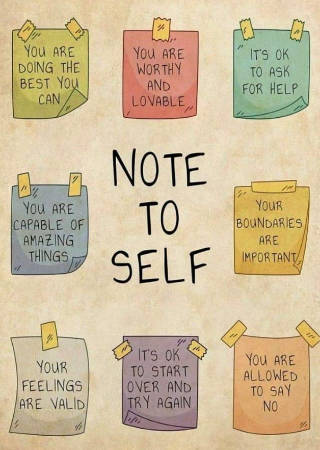

Overthinking is a habit where the mind becomes trapped in repetitive thoughts, doubts, and “what if” scenarios. While careful thinking can be useful, excessive rumination often increases stress, drains mental energy, and makes decision-making difficult. Individuals who overthink may focus on past mistakes or worry about the future, which can prevent them from living fully in the present.
Overthinking also reduces creativity and can make even simple tasks feel overwhelming. It may lead to self-doubt and fear of taking action, leaving a person stuck in a cycle of worry. Breaking this cycle involves setting boundaries for thoughts, focusing on what you can control, and practicing letting go of what cannot be changed.
Building awareness is key — by observing thoughts without judgment, patterns that trigger overthinking can be noticed and gradually replaced with more productive thinking. Techniques such as journaling, mindfulness, deep breathing, and short mental breaks help train the mind to stay calm, focused, and solution-oriented.
Stopping overthinking is not about ignoring problems, but balancing reflection with action. Prioritizing what truly matters, making decisions confidently, and practicing self-compassion reduce stress, improve mental clarity, and enhance emotional well-being.

New Commer? Book Appointment